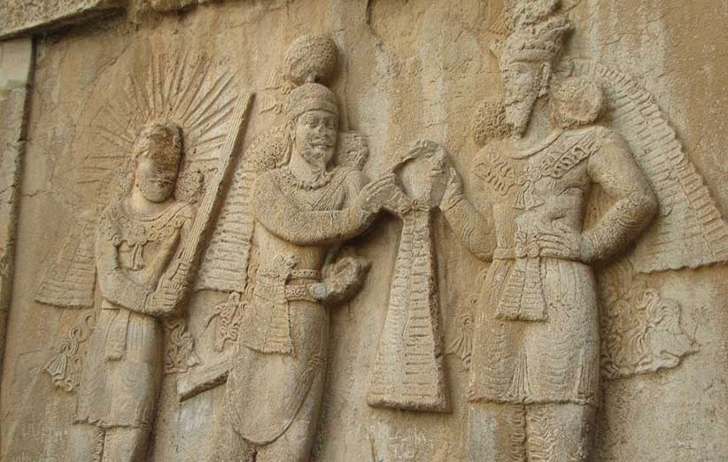

دلایل برپایی جشن شب یلدا
باورهای کهن ایرانی بر اساس اسطورهها و شناخت رویدادهای کیهانی شکل گرفته است. روایتهای مختلفی از علت برگزاری جشن یلدا وجود دارد.
روایت اول؛ پیروزی روشنایی و نور بر ظلمت و تاریکی
یکی از این روایتها در مورد شب یلدا به پیروزی نور بر ظلمت مربوط است. در روزگاران باستان، زندگی مردم بر پایه کشاورزی و دامپروری بود و تأثیرات آب و هوا برایشان بسیار مهم محسوب میشد. مردم با مشاهده و تجربه، تغییرات مداوم شب و روز و فصلها را درک کرده بودند. بشرِ همیشه کنجکاو هم پس از کشف چگونگیِ وقوع یک رویداد، به دنبال فلسفه و چرایی آنها میگردد. آنها تأثیر نور و تاریکی و گرما و سرما را بر زندگیشان میدیدند. از تأثیراتی که میگرفتند به این نتیجه رسیده بودند که نور، روز و خورشید، نماد آفریدگار و نیکی ست. در مقابلِ آن، شب و سرما نشانههای اهریمن و پلیدی. آنها از این مشاهدات، به این باور رسیده بودند که شب و روز، و روشنایی و تاریکی، در یک جدال همیشگی به سر میبرند. روزهای بلندتر، نشانه پیروزی روشنایی، و روزهای کوتاهتر نشانه غلبه تاریکی بود. به این ترتیب آنها آخرین روز پاییز که بلندترین شب سال است، جشن میگرفتند. چرا که فردای آن، روزها کمکم طولانیتر شده و آفریدگار بر اهریمن نور بر تاریکی پیروز میشود.
مهرپرستان شب یلدا را شب تولد میترا (ایزد مهر) میدانستد. اینگونه که در شبی دراز و سرد، ایزد مهر در یک غار گود و کم ارتفاع ظهور میکند و خورشید را به ارمغان میآورد. در روایتی دیگر، در این شب میترا به جهان بازمیگردد. او ساعات روز را طولانی میکند؛ در نتیجه برتری خورشید پدیدار میشود. بعضی بررسیها هم به این نتیجه رسیدهاند که در شب یلدا پیامبری متولد میشود. این تولد در سال ۵۱ پادشاهی اشکانیان که برابر با سال ۱۹۶ میلادی ست اتفاق میافتد. پیامبری شب هنگام در دریا زاده میشود که او را دو دلفین از آب بیرون میآورند. در آیین مهر آب اهمیت ویژهای داشته است. دربارهی نام ماههای آذر و دی اینطور میگویند: «آذر (عنصرِ آتش)، ایزد یا فرشته مینویی را نمایندگی میکند. این ایزد در سنت زرتشتی و مهرپرستی مقدس و مهم محسوب میشده. آتشِ مقدس در آتشکدهها، جلوه همین ایزد است. در مقابل، دی که آغاز زمستان است، پلید و اهریمنی محسوب میشده. دی در اصل همان دیو است که نام آن بر سردترین ماه زمستان گذاشته شده. بنابراین آذر نماد اهورامزدا و دی نماد اهریمن است. تقابل میان آتش، نور و تقدس با تاریکی و سرما و پلیدی». برخی هم بر این باورند که نام ماه دی از آیین میترایی آمده است و به معنای دادار و خداوند است. چرا که با شروع دی میترا بر اهریمن غلبه میکند. در نگاه اول اینٰطور به نظر میرسد که شب زایش مهر، باید در ماه مهر باشد؛ یا در آفتابیترین روزهای سال! درست است که در آغاز سردترین روزهای سال قرار داریم اما منطق پشت این اسطوره آن را باورپذیر میکند. همان طولانیتر شدن روزها و کوتاه شدن شبها نشان از تولد دوباره خورشید دارد. آداب و رسوم مهرپرستی، پس از رایج شدن دین زرتشتی از بین نرفت بلکه جزئی از مراسم آنها شد. زرتشت، خدای بزرگ را اهورا مزدا نامید و ایزدان را به دو دسته اهورایی و دیوانی تقسیم کرد. یکی از این ایزدانِ اهورایی، مهر (خورشید) بود. مهر از ایزدانِ نیک است و بخشی از اوستا به نام او (مهر یشت) ست. در مهر یشت آمده است: «مهر از آسمان با هزاران چشم بر ایرانی مینگرد تا او دروغی نگوید.»